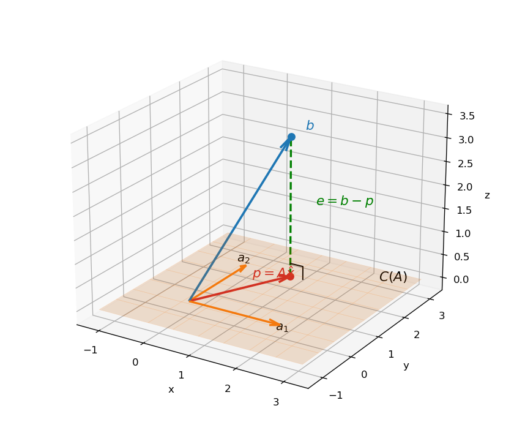

5. Orthogonality, projections, least squares
5.1 What this chapter is for
Most of machine learning is, quietly, the business of solving \(A\mathbf{x} = \mathbf{b}\). Chapter 3 gave three possible outcomes for that system; Chapter 4 named them geometrically: a solution exists iff \(\mathbf{b}\) is in the \(column\) \(space\) \(C(A)\) (§4.10).
But real data is uncooperative. You measure more data points than you have unknowns, the measurements carry \(noise\), and the tall system \(A\mathbf{x} = \mathbf{b}\) has no solution — \(\mathbf{b}\) is not in \(C(A)\). Throwing away equations until it solves is a bad deal: it dumps all the error onto the equations you dropped.
The better deal is the \(least\) \(squares\) \(idea\): keep every equation, and find the \(\mathbf{x}\) that makes the total squared miss \(\lVert A\mathbf{x} - \mathbf{b} \rVert^2\) as small as possible. The engine that finds it is the \(orthogonal\) \(projection\) of \(\mathbf{b}\) onto \(C(A)\). So this chapter answers three questions, in order:
- What does \(orthogonal\) mean — for vectors, and for whole subspaces?
- How do we \(project\) a vector onto a line, and onto a subspace?
- How do projections solve the \(least\) \(squares\) \(problem\)?
Basically, … When the target is off the shelf of reachable answers, don’t stretch — drop straight down onto the nearest point of the shelf. Orthogonality tells you which direction is “straight down.”
5.2 Orthogonal vectors
From Chapter 2 (§2.5): for \(\mathbf{x}, \mathbf{y} \in \mathbb{R}^n\), the \(dot\) \(product\) is \(\mathbf{x}^T\mathbf{y} = x_1y_1 + \cdots + x_ny_n\), and the \(length\) is \(\lVert \mathbf{x} \rVert = \sqrt{\mathbf{x}^T\mathbf{x}}\).
Def. \(\mathbf{x}\) is \(orthogonal\) to \(\mathbf{y}\) if \(\mathbf{x}^T\mathbf{y} = 0\).
This is exactly the \(right\) \(angle\) from school geometry, and \(Pythagoras\) \(theorem\) proves it. If \(\mathbf{x}\) and \(\mathbf{y}\) meet at a right angle, then \(\lVert \mathbf{x} + \mathbf{y} \rVert^2 = \lVert \mathbf{x} \rVert^2 + \lVert \mathbf{y} \rVert^2\). Expand the left side: \[(\mathbf{x} + \mathbf{y})^T(\mathbf{x} + \mathbf{y}) = \mathbf{x}^T\mathbf{x} + \mathbf{y}^T\mathbf{y} + 2\,\mathbf{x}^T\mathbf{y}.\] The cross term dies iff \(\mathbf{x}^T\mathbf{y} = 0\). So: right angle \(\iff\) dot product zero.
eg (full steps). \((1, 2)\) and \((-2, 1)\): \((1)(−2) + (2)(1) = -2 + 2 = 0\) — orthogonal. Pythagoras check: \(\lVert(1,2)\rVert^2 = 5\), \(\lVert(-2,1)\rVert^2 = 5\), and their sum is \((-1, 3)\) with \(\lVert(-1,3)\rVert^2 = 1 + 9 = 10 = 5 + 5\) ✓.
Two small facts the lecture flags:
- \(\mathbf{0}\) is orthogonal to every \(\mathbf{x}\): \(\mathbf{0}^T\mathbf{x} = 0\) always.
- \(Mutually\) \(orthogonal\) nonzero vectors are \(linearly\) \(independent\). Proof: suppose \(c_1\mathbf{v}_1 + \cdots + c_k\mathbf{v}_k = \mathbf{0}\). Dot both sides with \(\mathbf{v}_1\): everything dies except \(c_1\,\mathbf{v}_1^T\mathbf{v}_1 = 0\). Since \(\mathbf{v}_1 \ne \mathbf{0}\), \(\mathbf{v}_1^T\mathbf{v}_1 > 0\), so \(c_1 = 0\). Repeat with \(\mathbf{v}_2, \ldots, \mathbf{v}_k\).
Basically, … Orthogonal = at right angles = dot product is zero. That’s the whole test, and it’s why the zero vector is “perpendicular to everything” (its dot product with anything is 0).
5.3 Orthogonal subspaces
Def. Two \(subspaces\) \(U\) and \(V\) are \(orthogonal\) if \(\mathbf{x}^T\mathbf{y} = 0\) for every \(\mathbf{x} \in U\) and every \(\mathbf{y} \in V\).
eg. \(U = \operatorname{span}\{(1,0,0,0), (0,1,0,0)\}\) (the \(x_1x_2\)-plane in \(\mathbb{R}^4\)) and \(V = \operatorname{span}\{(0,0,1,0), (0,0,0,1)\}\) (the \(x_3x_4\)-plane): any vector of \(U\) has the form \((x_1, x_2, 0, 0)\), any vector of \(V\) the form \((0, 0, y_3, y_4)\), and their dot product is always \(0\).
Now the payoff from Chapter 4: the four \(fundamental\) \(subspaces\) pair up orthogonally.
- \(Row\) \(space\) \(\perp\) \(null\) \(space\): \(C(A^T) \perp N(A)\). Proof: take \(\mathbf{x} \in N(A)\), i.e. \(A\mathbf{x} = \mathbf{0}\). Row by row, that equation says \((\text{row}_i \text{ of } A)^T\mathbf{x} = 0\) — every row of \(A\) is orthogonal to \(\mathbf{x}\). Any \(linear\) \(combination\) of rows is therefore orthogonal to \(\mathbf{x}\) too, and linear combinations of rows are exactly the row space.
- \(Column\) \(space\) \(\perp\) \(left\) \(null\) \(space\): \(C(A) \perp N(A^T)\). This is the same claim applied to \(A^T\).
They are not just orthogonal — they are \(orthogonal\) \(complements\). The dimensions add up to the full space (Chapter 4’s table: \(r + (n-r) = n\) and \(r + (m-r) = m\)), so every vector of \(\mathbb{R}^n\) splits uniquely into a row-space piece plus a null-space piece, and every vector of \(\mathbb{R}^m\) into a column-space piece plus a left-null-space piece. That split \(\mathbf{b} = \mathbf{p} + \mathbf{e}\) is exactly what least squares computes.
eg (the lecture’s example, full steps). \(A = \begin{pmatrix} 1 & 2 \\ 2 & 4 \\ 3 & 6 \end{pmatrix}\). Column 2 = 2 · column 1, so \(C(A)\) is the line through \((1, 2, 3)^T\) (rank 1). \(N(A)\): \(x + 2y = 0\) gives the line through \((-2, 1)^T\). The row space: rows are \((1,2)\), \(2(1,2)\), \(3(1,2)\) — the line through \((1, 2)\) in \(\mathbb{R}^2\). Check pair i): \((1, 2) \cdot (-2, 1) = -2 + 2 = 0\) ✓. \(N(A^T)\): \(\mathbf{y}^TA = \mathbf{0}\) reads \(y_1 + 2y_2 + 3y_3 = 0\) — a plane in \(\mathbb{R}^3\); pair ii) holds there by the same row argument. Dimension check: \(\dim C(A^T) + \dim N(A) = 1 + 1 = 2 = n\); \(\dim C(A) + \dim N(A^T) = 1 + 2 = 3 = m\) ✓.
Basically, … The four subspaces from Chapter 4 come in two right-angle pairs: input side (\(row\) \(space\) ⊥ \(null\) \(space\)) and output side (\(column\) \(space\) ⊥ \(left\) \(null\) \(space\)). Whatever \(A\) can reach is perpendicular to whatever kills its transpose.
5.4 Orthonormal sets, and the \(Q^TQ = I\) fact
Def. Vectors are \(orthonormal\) if they are \(orthogonal\) and each has \(unit\) \(length\).
eg. \((1, 0)\) and \((0, 1)\). eg. \((\cos\theta, \sin\theta)\) and \((-\sin\theta, \cos\theta)\): dot product \(= -\cos\theta\sin\theta + \sin\theta\cos\theta = 0\); each length squared \(= \cos^2\theta + \sin^2\theta = 1\) ✓.
Now put orthonormal vectors \(\mathbf{q}_1, \ldots, \mathbf{q}_n\) as the columns of a matrix \(Q\). Then \[Q^TQ = I.\] Why: the \((i, j)\) entry of \(Q^TQ\) is \(\mathbf{q}_i^T\mathbf{q}_j\), which is \(1\) when \(i = j\) (unit length) and \(0\) when \(i \ne j\) (orthogonal). That is the whole content of the identity matrix.
eg (\(Q^TQ = I\), full steps). \(Q = \frac{1}{\sqrt{2}}\begin{pmatrix} 1 & 1 \\ 1 & -1 \end{pmatrix}\), columns \(\mathbf{q}_1 = \frac{1}{\sqrt{2}}(1, 1)^T\), \(\mathbf{q}_2 = \frac{1}{\sqrt{2}}(1, -1)^T\). Check orthonormality: \(\mathbf{q}_1^T\mathbf{q}_2 = \frac{1}{2}(1 - 1) = 0\); \(\lVert\mathbf{q}_1\rVert^2 = \frac{1}{2}(1 + 1) = 1\), same for \(\mathbf{q}_2\) ✓. Direct multiply: \[Q^TQ = \frac{1}{2}\begin{pmatrix} 1 & 1 \\ 1 & -1 \end{pmatrix}\begin{pmatrix} 1 & 1 \\ 1 & -1 \end{pmatrix} = \frac{1}{2}\begin{pmatrix} 2 & 0 \\ 0 & 2 \end{pmatrix} = \begin{pmatrix} 1 & 0 \\ 0 & 1 \end{pmatrix} = I.\]
Basically, … Orthonormal = “unit-length directions at right angles to each other.” \(Q^TQ = I\) is the matrix way of writing exactly that — the columns agree to be perpendicular unit vectors.
5.5 Why project? The inconsistent case
Chapter 4 §4.10 gave the verdict: \(A\mathbf{x} = \mathbf{b}\) has no solution iff \(\mathbf{b} \notin C(A)\). Now suppose that is the situation — for instance
\[2x = b_1, \quad 3x = b_2, \quad 4x = b_3, \qquad\text{or}\qquad x + 2y = 4,\ x + 3y = 5,\ 2x + 4y = 6.\]
Three (or more) equations, fewer unknowns, and in general the data does not line up. The lecture calls these \(inconsistent\) \(systems\).
You could solve any two of the equations exactly and throw the rest away. The problem: the discarded equations then carry huge errors while the kept ones carry none — an arbitrary, lopsided answer. The reasonable alternative is to spread the error: keep every equation and make the total \(squared\) \(error\) \(\lVert A\mathbf{x} - \mathbf{b} \rVert^2\) as small as possible. That is \(least\) \(squares\), and its geometric form is: find the point \(\mathbf{p}\) of \(C(A)\) closest to \(\mathbf{b}\) — the \(projection\) of \(\mathbf{b}\) onto the column space.
Basically, … No exact answer exists, so find the nearest reachable one. “Nearest” needs a notion of perpendicular — which is why this whole chapter runs on orthogonality.
5.6 Projection onto a line
Start with the simplest case: a line through a vector \(\mathbf{a}\). Given \(\mathbf{b}\), its \(projection\) \(\mathbf{p}\) is the point on the line closest to \(\mathbf{b}\); the \(error\) \(\mathbf{e} = \mathbf{b} - \mathbf{p}\) sticks out at a right angle to the line.
Write \(\mathbf{p} = \hat{x}\mathbf{a}\) (some scalar multiple of \(\mathbf{a}\)) and enforce the right angle: \[\mathbf{a}^T\mathbf{e} = 0 \;\Rightarrow\; \mathbf{a}^T(\mathbf{b} - \hat{x}\mathbf{a}) = 0 \;\Rightarrow\; \hat{x} = \frac{\mathbf{a}^T\mathbf{b}}{\mathbf{a}^T\mathbf{a}}.\] So the projection is \[\mathbf{p} = \frac{\mathbf{a}^T\mathbf{b}}{\mathbf{a}^T\mathbf{a}}\,\mathbf{a} = \left(\frac{\mathbf{a}\mathbf{a}^T}{\mathbf{a}^T\mathbf{a}}\right)\mathbf{b}.\]
eg (full steps). \(\mathbf{b} = (1, 2, 3)^T\), \(\mathbf{a} = (1, 1, 1)^T\). \(\mathbf{a}^T\mathbf{b} = 1 + 2 + 3 = 6\); \(\mathbf{a}^T\mathbf{a} = 1 + 1 + 1 = 3\); \(\hat{x} = 6/3 = 2\). \(\mathbf{p} = 2(1,1,1)^T = (2, 2, 2)^T\). \(\mathbf{e} = \mathbf{b} - \mathbf{p} = (-1, 0, 1)^T\). Check the right angle: \(\mathbf{a}^T\mathbf{e} = -1 + 0 + 1 = 0\) ✓.
The \(projection\) \(matrix\) \(P = \dfrac{\mathbf{a}\mathbf{a}^T}{\mathbf{a}^T\mathbf{a}}\) turns any \(\mathbf{b}\) into its projection: \(\mathbf{p} = P\mathbf{b}\).
eg (the lecture’s \(P\), full steps). \(\mathbf{a} = (1, 1, 1)^T\): \(P = \frac{1}{3}\begin{pmatrix} 1 & 1 & 1 \\ 1 & 1 & 1 \\ 1 & 1 & 1 \end{pmatrix}\). Apply to \(\mathbf{b} = (1, 2, 3)^T\): \(P\mathbf{b} = \frac{1}{3}(6, 6, 6)^T = (2, 2, 2)^T\) — same \(\mathbf{p}\) as above ✓. Apply to \((1, 0, 0)^T\): \(P(1,0,0)^T = (1/3, 1/3, 1/3)^T\) — projecting onto \((1,1,1)\) returns the average of the entries.
Three things to notice about \(P\) (the lecture checks each):
- \(P^T = P\) — \(P\) is \(symmetric\) (transpose the formula and it is unchanged).
- \(P^2 = P\) — projecting twice is the same as projecting once: \(P\mathbf{b}\) already lies on the line, so projecting again does nothing.
- \(C(P)\) is the line through \(\mathbf{a}\), \(N(P)\) is the plane orthogonal to \(\mathbf{a}\), \(\operatorname{rank}(P) = 1\).
Also: replacing \(\mathbf{a}\) by \(2\mathbf{a}\) (same line!) leaves \(P\) unchanged — the \(4\)’s cancel top and bottom. The projection matrix cares about the line, not the vector you named it with.
eg (the mean as a projection). \(x = 1,\ x = 2\) is inconsistent (\(A = (1,1)^T\), \(\mathbf{b} = (1,2)^T\)). \(\hat{x} = \frac{\mathbf{a}^T\mathbf{b}}{\mathbf{a}^T\mathbf{a}} = \frac{1 + 2}{2} = \frac{3}{2}\) — the average of the two measurements. Least squares on one unknown is just averaging.
Note (a free theorem): the projection proof gives \(Cauchy\)–\(Schwarz\) almost for free. \(\lVert\mathbf{e}\rVert^2 \ge 0\) with \(\mathbf{e} = \mathbf{b} - \dfrac{\mathbf{a}^T\mathbf{b}}{\mathbf{a}^T\mathbf{a}}\mathbf{a}\) expands to \(\mathbf{b}^T\mathbf{b} - \dfrac{(\mathbf{a}^T\mathbf{b})^2}{\mathbf{a}^T\mathbf{a}} \ge 0\), i.e. \[|\mathbf{a}^T\mathbf{b}| \le \lVert\mathbf{a}\rVert\,\lVert\mathbf{b}\rVert.\] Equality holds exactly when \(\mathbf{b}\) is already a multiple of \(\mathbf{a}\) (so \(\mathbf{e} = \mathbf{0}\)).
Basically, … Projection = the shadow of \(\mathbf{b}\) cast straight down onto the line. \(P\) is the shadow machine: feed it any vector, it returns the shadow. Shadows of shadows don’t move (\(P^2 = P\)), and the machine is symmetric (\(P^T = P\)).
5.7 Projection onto a subspace
Now the general case: \(A\) is \(m \times n\) with more equations than unknowns, and we want the projection \(\mathbf{p}\) of \(\mathbf{b}\) onto the \(column\) \(space\) \(C(A)\).
The logic is identical to the line case, one dimension up. Write \(\mathbf{p} = A\hat{\mathbf{x}}\) (some combination of the columns) and demand the error be orthogonal to the whole space: \[\mathbf{e} = \mathbf{b} - A\hat{\mathbf{x}} \;\perp\; C(A).\] The lecture derives what this forces in two ways:
- \(Orthogonal\)-\(complement\) \(route\): \(\mathbf{e}\) is orthogonal to every vector of \(C(A)\), and §5.3 says the orthogonal complement of \(C(A)\) is \(N(A^T)\). So \(\mathbf{e} \in N(A^T)\), i.e. \(A^T\mathbf{e} = \mathbf{0}\).
- \(First\)-\(principles\) \(route\): write \(A = [\mathbf{a}_1 \cdots \mathbf{a}_n]\). \(\mathbf{e} \perp C(A)\) means \(\mathbf{a}_i^T\mathbf{e} = 0\) for every column; stacking those rows gives \(A^T\mathbf{e} = \mathbf{0}\).
Either way, with \(\mathbf{e} = \mathbf{b} - A\hat{\mathbf{x}}\): \[A^T(\mathbf{b} - A\hat{\mathbf{x}}) = \mathbf{0} \quad\Longrightarrow\quad A^TA\hat{\mathbf{x}} = A^T\mathbf{b}.\] These are the \(normal\) \(equations\) — the single most important equation of this chapter (and the one Chapter 3 §3.1 previewed). Even when \(A\mathbf{x} = \mathbf{b}\) is inconsistent, \(A^TA\hat{\mathbf{x}} = A^T\mathbf{b}\) always has a solution.
If the columns of \(A\) are \(linearly\) \(independent\), \(A^TA\) is \(invertible\) (proof: \(A^TA\mathbf{x} = \mathbf{0} \Rightarrow \mathbf{x}^TA^TA\mathbf{x} = \lVert A\mathbf{x} \rVert^2 = 0 \Rightarrow A\mathbf{x} = \mathbf{0} \Rightarrow \mathbf{x} = \mathbf{0}\), so \(A^TA\) kills nothing). Then \[\hat{\mathbf{x}} = (A^TA)^{-1}A^T\mathbf{b}, \qquad \mathbf{p} = A\hat{\mathbf{x}} = \underbrace{A(A^TA)^{-1}A^T}_{P}\mathbf{b}.\]
The general \(projection\) \(matrix\) is \(P = A(A^TA)^{-1}A^T\). Check its two properties:
- \(P^T = P\): transpose reverses the product, \((A^TA)^{-1}\) is symmetric because \(A^TA\) is (\((A^TA)^T = A^T(A^T)^T = A^TA\)), and everything folds back to \(P\).
- \(P^2 = P\): \(A(A^TA)^{-1}\underbrace{A^TA(A^TA)^{-1}}A^T = A(A^TA)^{-1}A^T\) — the middle pair cancels to \(I\).
The converse holds too: \(P^2 = P\) and \(P^T = P\) imply \(P\) is the projection matrix onto \(C(P)\), because \((\mathbf{b} - P\mathbf{b})^T(P\mathbf{c}) = \mathbf{b}^T(I - P)P\mathbf{c} = \mathbf{b}^T(P - P^2)\mathbf{c} = 0\) — the error is orthogonal to everything in the column space.
Four sanity checks (the lecture’s special cases):
- \(\mathbf{b} \in C(A)\), say \(\mathbf{b} = A\mathbf{x}\): \(P\mathbf{b} = A(A^TA)^{-1}A^TA\mathbf{x} = A\mathbf{x} = \mathbf{b}\) — already in the space, projection does nothing.
- \(\mathbf{b} \in N(A^T)\): \(A^T\mathbf{b} = \mathbf{0} \Rightarrow P\mathbf{b} = \mathbf{0}\) — fully perpendicular, projection kills it.
- \(A\) square and invertible: \(P = A(A^TA)^{-1}A^T = I\) — the column space is all of \(\mathbb{R}^n\), every \(\mathbf{b}\) is already there.
- Rank 1 (\(A = \mathbf{a}\)): \(P = \mathbf{a}\mathbf{a}^T/\mathbf{a}^T\mathbf{a}\) — back to §5.6, as it must.
\(Orthonormal\)-\(basis\) \(shortcut\): if \(\mathbf{q}_1, \ldots, \mathbf{q}_r\) is an orthonormal basis of the subspace, then \(Q^TQ = I\) collapses the formula to \(P = QQ^T\), and \[\mathbf{p} = \sum_{i=1}^{r} (\mathbf{q}_i^T\mathbf{b})\,\mathbf{q}_i.\] Project onto each basis direction (a line projection, §5.6), add the pieces.
eg (projection onto a plane, full steps — this is the figure below). \(C(A)\) = the \(xy\)-plane, spanned by the orthonormal \(\mathbf{q}_1 = \frac{1}{\sqrt{2}}(1, 1, 0)^T\), \(\mathbf{q}_2 = \frac{1}{\sqrt{2}}(1, -1, 0)^T\) (§5.4). Project \(\mathbf{b} = (1, 2, 3)^T\): \[\mathbf{q}_1^T\mathbf{b} = \frac{3}{\sqrt{2}}, \qquad \mathbf{q}_2^T\mathbf{b} = \frac{-1}{\sqrt{2}},\] \[\mathbf{p} = \frac{3}{\sqrt{2}}\mathbf{q}_1 - \frac{1}{\sqrt{2}}\mathbf{q}_2 = \frac{3}{2}(1,1,0)^T - \frac{1}{2}(1,-1,0)^T = (1, 2, 0)^T.\] The projection matrix \(P = \mathbf{q}_1\mathbf{q}_1^T + \mathbf{q}_2\mathbf{q}_2^T\): \[P = \frac{1}{2}\begin{pmatrix} 1 & 1 & 0 \\ 1 & 1 & 0 \\ 0 & 0 & 0 \end{pmatrix} + \frac{1}{2}\begin{pmatrix} 1 & -1 & 0 \\ -1 & 1 & 0 \\ 0 & 0 & 0 \end{pmatrix} = \begin{pmatrix} 1 & 0 & 0 \\ 0 & 1 & 0 \\ 0 & 0 & 0 \end{pmatrix}.\] Check: \(P^2 = P\) (diagonal of 0s and 1s), \(P^T = P\) ✓; \(P\mathbf{b} = (1, 2, 0)^T\) ✓. The error \(\mathbf{e} = (0, 0, 3)^T\) is orthogonal to the plane. (With \(A = \begin{pmatrix} 2 & 0 \\ 0 & 2 \\ 0 & 0 \end{pmatrix}\), the normal equations give \(A^TA = 4I\), \(A^T\mathbf{b} = (2, 4)^T\), \(\hat{\mathbf{x}} = (1/2, 1)^T\), \(A\hat{\mathbf{x}} = (1, 2, 0)^T\) ✓ — same answer, no orthonormal shortcut needed.)

Basically, … Projecting onto a subspace = running the line-projection in every basis direction and adding the results. The normal equations \(A^TA\hat{\mathbf{x}} = A^T\mathbf{b}\) are the “which combination of columns?” question, answered in one shot.
5.8 Least squares: the two routes to the normal equations
The \(least\) \(squares\) \(problem\): \(A\) is \(m \times n\) with \(m > n\) (\(tall\) — more equations than unknowns), \(\mathbf{b} \notin C(A)\), and we want \[\hat{\mathbf{x}} = \operatorname*{arg\,min}_{\mathbf{x}} \lVert A\mathbf{x} - \mathbf{b} \rVert^2.\]
The calculus route (the lecture’s 1-D example). Take \(2x = b_1,\ 3x = b_2,\ 4x = b_3\). The squared error: \[E = (2x - b_1)^2 + (3x - b_2)^2 + (4x - b_3)^2.\] Set \(\frac{dE}{dx} = 0\): \[2(2x - b_1)\cdot 2 + 2(3x - b_2)\cdot 3 + 2(4x - b_3)\cdot 4 = 0.\] Drop the common factor 2: \(2(2x - b_1) + 3(3x - b_2) + 4(4x - b_3) = 0\), i.e. \((4 + 9 + 16)x = 2b_1 + 3b_2 + 4b_3\). So \[\hat{x} = \frac{2b_1 + 3b_2 + 4b_3}{29} = \frac{\mathbf{a}^T\mathbf{b}}{\mathbf{a}^T\mathbf{a}}, \qquad \mathbf{a} = (2, 3, 4)^T.\] This is exactly the §5.6 projection formula. The lecture’s bottom line: taking derivatives and finding the minimum is the same operation as projecting.
The geometric route. The closest point of \(C(A)\) to \(\mathbf{b}\) is its orthogonal projection \(\mathbf{p} = A\hat{\mathbf{x}}\) (§5.7). The error \(\mathbf{e} = \mathbf{b} - A\hat{\mathbf{x}}\) is orthogonal to \(C(A)\), which forces the normal equations: \[A^TA\hat{\mathbf{x}} = A^T\mathbf{b}.\] When the columns of \(A\) are linearly independent, \(A^TA\) is invertible and \[\hat{\mathbf{x}} = (A^TA)^{-1}A^T\mathbf{b}.\]
Note: \(A^TA\) is always \(symmetric\) (\((A^TA)^T = A^TA\)); it is invertible exactly when \(A\)’s columns are independent (§5.7’s proof). With dependent columns there are infinitely many least-squares \(\hat{\mathbf{x}}\) — the normal equations still have solutions, but no unique one.
Note (ML): least squares is the engine of \(linear\) \(regression\): fitting a line (or plane, or hyperplane) to data points is exactly “minimize \(\lVert A\mathbf{x} - \mathbf{b} \rVert^2\),” and the normal equations are the training step. The full regression story is Chapter 23; projection matrices resurface in \(PCA\) (Chapter 24).
Basically, … No exact answer exists, so take the answer with the smallest total miss. Two ways to say the same thing: (1) calculus — differentiate the squared error, set to zero; (2) geometry — drop \(\mathbf{b}\) perpendicularly onto the column space. Both land on \(A^TA\hat{\mathbf{x}} = A^T\mathbf{b}\).
5.9 Worked example set
eg (the lecture’s least-squares example, recomputed). Fit the best line \(y = \theta' x + \theta''\) through the points \((-1, 1)\), \((1, 1)\), \((2, 3)\): \[A\boldsymbol{\theta} = \mathbf{b}, \qquad A = \begin{pmatrix} -1 & 1 \\ 1 & 1 \\ 2 & 1 \end{pmatrix},\ \ \boldsymbol{\theta} = \begin{pmatrix} \theta' \\ \theta'' \end{pmatrix},\ \ \mathbf{b} = \begin{pmatrix} 1 \\ 1 \\ 3 \end{pmatrix}.\]
Step 1 — is it even solvable? Eliminate on \([A \mid \mathbf{b}]\): \[\begin{pmatrix} -1 & 1 & | & 1 \\ 1 & 1 & | & 1 \\ 2 & 1 & | & 3 \end{pmatrix} \xrightarrow[R_3 \gets R_3 + 2R_1]{R_2 \gets R_2 + R_1} \begin{pmatrix} -1 & 1 & | & 1 \\ 0 & 2 & | & 2 \\ 0 & 3 & | & 5 \end{pmatrix} \xrightarrow{R_3 \gets R_3 - \frac{3}{2}R_2} \begin{pmatrix} -1 & 1 & | & 1 \\ 0 & 2 & | & 2 \\ 0 & 0 & | & 2 \end{pmatrix}.\] Last row: \(0 = 2\) — inconsistent, so \(\mathbf{b} \notin C(A)\). Least squares it is.
Step 2 — build the normal equations. \(A^T = \begin{pmatrix} -1 & 1 & 2 \\ 1 & 1 & 1 \end{pmatrix}\): \[A^TA = \begin{pmatrix} 1+1+4 & -1+1+2 \\ -1+1+2 & 1+1+1 \end{pmatrix} = \begin{pmatrix} 6 & 2 \\ 2 & 3 \end{pmatrix}, \qquad A^T\mathbf{b} = \begin{pmatrix} -1+1+6 \\ 1+1+3 \end{pmatrix} = \begin{pmatrix} 6 \\ 5 \end{pmatrix}.\]
Step 3 — solve \(6\hat{\theta}' + 2\hat{\theta}'' = 6\), \(2\hat{\theta}' + 3\hat{\theta}'' = 5\). From the first, \(\hat{\theta}'' = 3 - 3\hat{\theta}'\); substitute: \(2\hat{\theta}' + 3(3 - 3\hat{\theta}') = 5 \Rightarrow -7\hat{\theta}' = -4\). So \[\hat{\theta}' = \frac{4}{7}, \qquad \hat{\theta}'' = 3 - \frac{12}{7} = \frac{9}{7}.\] The best-fit line: \(y = \frac{4}{7}x + \frac{9}{7}\).
Step 4 — the projections (fitted values): at \(x = -1\): \(\frac{4}{7}(-1) + \frac{9}{7} = \frac{5}{7}\); at \(x = 1\): \(\frac{13}{7}\); at \(x = 2\): \(\frac{17}{7}\). So \(\mathbf{p} = A\hat{\boldsymbol{\theta}} = (5/7,\ 13/7,\ 17/7)^T\) — check row 1: \(-\frac{4}{7} + \frac{9}{7} = \frac{5}{7}\) ✓.
Step 5 — the error: \(\mathbf{e} = \mathbf{b} - \mathbf{p} = (2/7,\ -6/7,\ 4/7)^T\). Verify \(\mathbf{e} \perp C(A)\): against column 1, \((-1)\frac{2}{7} + \frac{-6}{7} + 2\cdot\frac{4}{7} = \frac{-2-6+8}{7} = 0\) ✓; against column 2, \(\frac{2}{7} - \frac{6}{7} + \frac{4}{7} = 0\) ✓. So \(\mathbf{e} \in N(A^T)\), exactly as §5.7 demands.
Step 6 — the minimum squared error: \(\lVert\mathbf{e}\rVert^2 = \frac{4 + 36 + 16}{49} = \frac{56}{49} = \frac{8}{7}\). (Had the three points lain exactly on a line, we would have \(\mathbf{e} = \mathbf{0}\) and error \(0\) — the “consistent” case.)
eg (the projection matrix for the same example). \(M = (A^TA)^{-1} = \frac{1}{14}\begin{pmatrix} 3 & -2 \\ -2 & 6 \end{pmatrix}\) (check: \(\begin{pmatrix}6&2\\2&3\end{pmatrix}\begin{pmatrix}3&-2\\-2&6\end{pmatrix} = 14I\) ✓). With rows \(\mathbf{r}_1 = (-1, 1)\), \(\mathbf{r}_2 = (1, 1)\), \(\mathbf{r}_3 = (2, 1)\) of \(A\), \(P_{ij} = \mathbf{r}_i M \mathbf{r}_j^T\): \[P = \begin{pmatrix} 13/14 & 3/14 & -1/7 \\ 3/14 & 5/14 & 3/7 \\ -1/7 & 3/7 & 5/7 \end{pmatrix}.\] Verify \(P\mathbf{b} = \mathbf{p}\): row 1 gives \(\frac{13}{14} + \frac{3}{14} - \frac{3}{7} = \frac{16}{14} - \frac{6}{14} = \frac{10}{14} = \frac{5}{7}\) ✓; row 2 gives \(\frac{3}{14} + \frac{5}{14} + \frac{9}{7} = \frac{8}{14} + \frac{18}{14} = \frac{26}{14} = \frac{13}{7}\) ✓; row 3 gives \(-\frac{1}{7} + \frac{3}{7} + \frac{15}{7} = \frac{17}{7}\) ✓. Sanity: \(\operatorname{tr}(P) = \frac{13}{14} + \frac{5}{14} + \frac{10}{14} = 2\) = number of independent columns = rank of \(P\) ✓.
5.10 Problem set
- Orthogonality check, with full steps: (a) Are \((1, 2)\) and \((-2, 1)\) orthogonal? Verify Pythagoras on them. (b) Are \((1, 2, 3)\) and \((2, -1, -1)\) orthogonal?
- Are \(\frac{1}{\sqrt{2}}(1, 1)\) and \(\frac{1}{\sqrt{2}}(1, -1)\) orthonormal? Show every step (dot product, both lengths).
- For \(Q = \frac{1}{\sqrt{2}}\begin{pmatrix} 1 & 1 \\ 1 & -1 \end{pmatrix}\): (a) verify \(Q^TQ = I\) by direct multiplication; (b) use \(P = \mathbf{q}_1\mathbf{q}_1^T\) to project \((3, 1)\) onto the line through \(\mathbf{q}_1\), and check the error is orthogonal to \(\mathbf{q}_1\).
- Project \(\mathbf{b} = (4, 2)\) onto the line through \(\mathbf{a} = (1, 3)\): find \(\hat{x}\), \(\mathbf{p}\), \(\mathbf{e}\), and verify \(\mathbf{a}^T\mathbf{e} = 0\).
- Show that replacing \(\mathbf{a}\) by \(3\mathbf{a}\) in \(P = \dfrac{\mathbf{a}\mathbf{a}^T}{\mathbf{a}^T\mathbf{a}}\) leaves \(P\) unchanged (use \(\mathbf{a} = (1, 1, 1)^T\) and compute both).
- For \(P = \frac{1}{3}\begin{pmatrix} 1 & 1 & 1 \\ 1 & 1 & 1 \\ 1 & 1 & 1 \end{pmatrix}\): verify \(P^2 = P\) and \(P^T = P\) by direct multiplication; state \(C(P)\), \(N(P)\), and \(\operatorname{rank}(P)\); compute \(P(1, 2, 3)^T\) and \(P(1, 0, 0)^T\).
- \(A = \begin{pmatrix} 1 & 1 \\ 1 & 2 \\ 1 & 3 \end{pmatrix}\), \(\mathbf{b} = (1, 2, 2)^T\). Compute \(A^TA\) and \(A^T\mathbf{b}\), solve the normal equations, write the fitted line, compute the residual \(\mathbf{e}\), and verify it is orthogonal to both columns of \(A\).
- Solve the least-squares problem \(2x = 3,\ 4x = 5,\ 6x = 6\); then check the error vector is orthogonal to \((2, 4, 6)^T\).
- Prove: if \(\mathbf{v}_1, \mathbf{v}_2, \mathbf{v}_3\) are nonzero and pairwise orthogonal, they are linearly independent.
- True or false, with a reason: (a) \(P^2 = P\) alone implies \(P\) is an (orthogonal) projection matrix. (b) If the columns of \(A\) are dependent, then \(A^TA\) is not invertible. (c) The projection of \(\mathbf{b}\) onto \(C(A)\) does not depend on which basis of \(C(A)\) you use.
- The system \(x = 1,\ x = 2\) is inconsistent. Show the least-squares answer is the mean \(\hat{x} = 3/2\), and describe the geometry in one line.
- Solve the least-squares problem \(x + y = 1,\ x + 2y = 2,\ x + 3y = 4\): find \(\hat{x}, \hat{y}\), the residual vector, and verify the residual is orthogonal to both columns of \(A\).
5.11 Where this goes next
- Chapter 6 (eigen-stuff): \(Q^TQ = I\) returns in its nicest form — a \(symmetric\) \(matrix\) has \(orthonormal\) \(eigenvectors\), so it diagonalizes as \(A = Q\Lambda Q^T\) with a genuine rotation \(Q\). Orthogonality is what makes symmetric matrices so well-behaved.
- Chapter 23 (regression): least squares grows up into \(linear\) \(regression\). Fitting a line today becomes fitting hyperplanes to real datasets; the normal equations \(A^TA\hat{\mathbf{x}} = A^T\mathbf{b}\) are still the training step, and the residual \(\mathbf{e}\) becomes the thing statistics is built on.
- Chapter 24 (PCA): projection matrices come back as the tool that drops high-dimensional data onto its most informative directions — \(P\mathbf{b}\) keeping the signal, \((I - P)\mathbf{b}\) thrown away as noise.
Solutions
Attempt each problem first, then click a problem to reveal its worked solution.
1. (a) \((1, 2) \cdot (-2, 1) = 1 \cdot (-2) + 2 \cdot 1 = -2 + 2 = 0\) — orthogonal. Pythagoras: \(\lVert(1,2)\rVert^2 = 1 + 4 = 5\); \(\lVert(-2,1)\rVert^2 = 4 + 1 = 5\); sum \((1,2) + (-2,1) = (-1, 3)\) with \(\lVert(-1,3)\rVert^2 = 1 + 9 = 10 = 5 + 5\) ✓.
- \((1, 2, 3) \cdot (2, -1, -1) = 2 - 2 - 3 = -3 \ne 0\) — not orthogonal.
2. Let \(\mathbf{u} = \frac{1}{\sqrt{2}}(1, 1)\), \(\mathbf{v} = \frac{1}{\sqrt{2}}(1, -1)\). Dot: \(\mathbf{u}^T\mathbf{v} = \frac{1}{2}(1 \cdot 1 + 1 \cdot (-1)) = \frac{1}{2}(1 - 1) = 0\) ✓. Lengths: \(\lVert\mathbf{u}\rVert^2 = \frac{1}{2}(1 + 1) = 1\), \(\lVert\mathbf{v}\rVert^2 = \frac{1}{2}(1 + 1) = 1\) ✓. Orthogonal + unit length = orthonormal.
3. (a) \(Q^T = \frac{1}{\sqrt{2}}\begin{pmatrix} 1 & 1 \\ 1 & -1 \end{pmatrix}\) (symmetric), so \[Q^TQ = \frac{1}{2}\begin{pmatrix} 1 & 1 \\ 1 & -1 \end{pmatrix}\begin{pmatrix} 1 & 1 \\ 1 & -1 \end{pmatrix} = \frac{1}{2}\begin{pmatrix} 2 & 0 \\ 0 & 2 \end{pmatrix} = I.\]
- \(\mathbf{q}_1 = \frac{1}{\sqrt{2}}(1, 1)^T\). \(P = \mathbf{q}_1\mathbf{q}_1^T = \frac{1}{2}\begin{pmatrix} 1 & 1 \\ 1 & 1 \end{pmatrix}\). Project \((3, 1)^T\): \(P(3,1)^T = \frac{1}{2}(4, 4)^T = (2, 2)^T\). Via the formula: \(\hat{x} = \frac{\mathbf{q}_1^T\mathbf{b}}{\mathbf{q}_1^T\mathbf{q}_1} = \mathbf{q}_1^T\mathbf{b} = \frac{3+1}{\sqrt{2}} = 2\sqrt{2}\) (since \(\mathbf{q}_1^T\mathbf{q}_1 = 1\)), \(\mathbf{p} = 2\sqrt{2} \cdot \frac{1}{\sqrt{2}}(1,1)^T = (2, 2)^T\) ✓. Error: \(\mathbf{e} = (3,1)^T - (2,2)^T = (1, -1)^T\); \(\mathbf{q}_1^T\mathbf{e} = \frac{1}{\sqrt{2}}(1 - 1) = 0\) ✓.
4. \(\mathbf{a}^T\mathbf{b} = 4 \cdot 1 + 2 \cdot 3 = 10\); \(\mathbf{a}^T\mathbf{a} = 1 + 9 = 10\). \(\hat{x} = 10/10 = 1\). \(\mathbf{p} = 1 \cdot (1, 3)^T = (1, 3)^T\). \(\mathbf{e} = (4, 2)^T - (1, 3)^T = (3, -1)^T\). Check: \(\mathbf{a}^T\mathbf{e} = 3 \cdot 1 + (-1) \cdot 3 = 3 - 3 = 0\) ✓.
5. With \(\mathbf{a} = (1,1,1)^T\): \(\mathbf{a}\mathbf{a}^T\) is the \(3 \times 3\) all-ones matrix, \(\mathbf{a}^T\mathbf{a} = 3\), so \(P = \frac{1}{3}\mathbf{1}\mathbf{1}^T\). With \(3\mathbf{a} = (3,3,3)^T\): \((3\mathbf{a})(3\mathbf{a})^T = 9 \cdot \mathbf{1}\mathbf{1}^T\), \((3\mathbf{a})^T(3\mathbf{a}) = 27\); ratio \(= \frac{9}{27}\mathbf{1}\mathbf{1}^T = \frac{1}{3}\mathbf{1}\mathbf{1}^T\) — identical ✓. The line is what matters, not the label vector.
6. \(P^2\): entry \((i,j) = \sum_k \frac{1}{3}\cdot\frac{1}{3} = 3 \cdot \frac{1}{9} = \frac{1}{3}\) — every entry is \(1/3\), so \(P^2 = P\) ✓. \(P^T = P\) is immediate (all entries equal) ✓. \(C(P)\): every column is \((1/3, 1/3, 1/3)^T\) — the line through \((1, 1, 1)^T\). \(N(P)\): \(P\mathbf{x} = \mathbf{0} \iff x_1 + x_2 + x_3 = 0\) — the plane orthogonal to \((1,1,1)^T\). \(\operatorname{rank}(P) = 1\). \(P(1,2,3)^T = \frac{1}{3}(6,6,6)^T = (2,2,2)^T\); \(P(1,0,0)^T = (1/3, 1/3, 1/3)^T\) (the average of the entries).
7. Columns: \(\mathbf{c}_1 = (1,1,1)^T\), \(\mathbf{c}_2 = (1,2,3)^T\). \(A^TA = \begin{pmatrix} \mathbf{c}_1^T\mathbf{c}_1 & \mathbf{c}_1^T\mathbf{c}_2 \\ \mathbf{c}_1^T\mathbf{c}_2 & \mathbf{c}_2^T\mathbf{c}_2 \end{pmatrix} = \begin{pmatrix} 3 & 6 \\ 6 & 14 \end{pmatrix}\) (dot products: \(1+1+1 = 3\); \(1+2+3 = 6\); \(1+4+9 = 14\)). \(A^T\mathbf{b} = (\mathbf{c}_1^T\mathbf{b},\ \mathbf{c}_2^T\mathbf{b})^T = (1+2+2,\ 1+4+6)^T = (5, 11)^T\). Normal equations: \(\begin{pmatrix} 3 & 6 \\ 6 & 14 \end{pmatrix}\hat{\boldsymbol{\theta}} = \begin{pmatrix} 5 \\ 11 \end{pmatrix}\). \(\det = 42 - 36 = 6\); inverse \(\frac{1}{6}\begin{pmatrix} 14 & -6 \\ -6 & 3 \end{pmatrix}\). \(\hat{\boldsymbol{\theta}} = \frac{1}{6}\begin{pmatrix} 14\cdot5 - 6\cdot11 \\ -6\cdot5 + 3\cdot11 \end{pmatrix} = \frac{1}{6}(4, 3)^T = (2/3,\ 1/2)^T\). Fitted line (first column is the constant): \(y = \frac{1}{2}x + \frac{2}{3}\). Residual: \(\mathbf{p} = \frac{2}{3}\mathbf{c}_1 + \frac{1}{2}\mathbf{c}_2 = (7/6,\ 5/3,\ 13/6)^T\); \(\mathbf{e} = (1,2,2)^T - \mathbf{p} = (-1/6,\ 1/3,\ -1/6)^T\). Checks: \(\mathbf{e}^T\mathbf{c}_1 = -1/6 + 1/3 - 1/6 = 0\) ✓; \(\mathbf{e}^T\mathbf{c}_2 = -1/6 + 2/3 - 3/6 = (-1 + 4 - 3)/6 = 0\) ✓. Minimum squared error \(\lVert\mathbf{e}\rVert^2 = 1/36 + 4/36 + 1/36 = 6/36 = 1/6\).
8. \(A = (2, 4, 6)^T\). \(A^TA = 4 + 16 + 36 = 56\); \(A^T\mathbf{b} = 2\cdot3 + 4\cdot5 + 6\cdot6 = 6 + 20 + 36 = 62\). \(\hat{x} = 62/56 = 31/28\). Error: \(\hat{x}A = (62/28,\ 124/28,\ 186/28)^T\); \(\mathbf{e} = (3,5,6)^T - \hat{x}A = (22/28,\ 16/28,\ -18/28)^T\). Check: \((2,4,6) \cdot \mathbf{e} = \frac{44 + 64 - 108}{28} = 0\) ✓.
9. Suppose \(c_1\mathbf{v}_1 + c_2\mathbf{v}_2 + c_3\mathbf{v}_3 = \mathbf{0}\). Dot with \(\mathbf{v}_1\): \(c_1\,\mathbf{v}_1^T\mathbf{v}_1 + c_2\,\mathbf{v}_2^T\mathbf{v}_1 + c_3\,\mathbf{v}_3^T\mathbf{v}_1 = 0\). Pairwise orthogonality kills the last two terms; \(\mathbf{v}_1 \ne \mathbf{0}\) gives \(\mathbf{v}_1^T\mathbf{v}_1 > 0\), so \(c_1 = 0\). Dotting with \(\mathbf{v}_2\) gives \(c_2 = 0\); with \(\mathbf{v}_3\), \(c_3 = 0\). Only the trivial combination works — independent.
10. (a) False. \(P^2 = P\) alone makes \(P\) \(idempotent\) (an oblique projection onto its column space along its null space). For the orthogonal projection matrix we built, you also need \(P^T = P\) — the lecture’s converse requires both. (b) True. Dependent columns: \(A\mathbf{x} = \mathbf{0}\) for some \(\mathbf{x} \ne \mathbf{0}\). Then \(A^TA\mathbf{x} = A^T\mathbf{0} = \mathbf{0}\) with \(\mathbf{x} \ne \mathbf{0}\), so \(A^TA\) is singular. (c) True. \(P = A(A^TA)^{-1}A^T\) projects onto the whole space \(C(A)\); changing basis \(A \to AQ\) (\(Q\) invertible) gives \(AQ((AQ)^TAQ)^{-1}(AQ)^T = AQ(Q^TA^TAQ)^{-1}Q^TA^T = A(A^TA)^{-1}A^T\) — the same \(P\).
11. \(A = (1, 1)^T\), \(\mathbf{b} = (1, 2)^T\): \(A^TA = 2\), \(A^T\mathbf{b} = 3\), \(\hat{x} = 3/2\). Residual: \((1 - 3/2,\ 2 - 3/2)^T = (-1/2,\ 1/2)^T\), orthogonal to \((1,1)^T\) ✓. Geometry: one unknown, two data points on the \(x\)-axis of the unknown — the closest point of the line \(\operatorname{span}\{(1,1)\}\) to \((1, 2)\) sits at the midpoint, the mean.
12. \(A = \begin{pmatrix} 1 & 1 \\ 1 & 2 \\ 1 & 3 \end{pmatrix}\), \(\mathbf{b} = (1, 2, 4)^T\). Same \(A^TA = \begin{pmatrix} 3 & 6 \\ 6 & 14 \end{pmatrix}\) as problem 7. \(A^T\mathbf{b} = (1+2+4,\ 1+4+12)^T = (7, 17)^T\). \(\hat{\mathbf{x}} = \frac{1}{6}\begin{pmatrix} 14 & -6 \\ -6 & 3 \end{pmatrix}\begin{pmatrix} 7 \\ 17 \end{pmatrix} = \frac{1}{6}(98 - 102,\ -42 + 51)^T = \frac{1}{6}(-4, 9)^T = (-2/3,\ 3/2)^T\). So \(\hat{x} = -2/3\), \(\hat{y} = 3/2\). Fitted values: \(\mathbf{p} = -\frac{2}{3}(1,1,1)^T + \frac{3}{2}(1,2,3)^T = (5/6,\ 7/3,\ 23/6)^T\). Residual: \(\mathbf{e} = (1 - 5/6,\ 2 - 7/3,\ 4 - 23/6)^T = (1/6,\ -1/3,\ 1/6)^T\). Checks: \(\mathbf{e}^T(1,1,1)^T = 1/6 - 1/3 + 1/6 = 0\) ✓; \(\mathbf{e}^T(1,2,3)^T = 1/6 - 2/3 + 3/6 = (1 - 4 + 3)/6 = 0\) ✓.